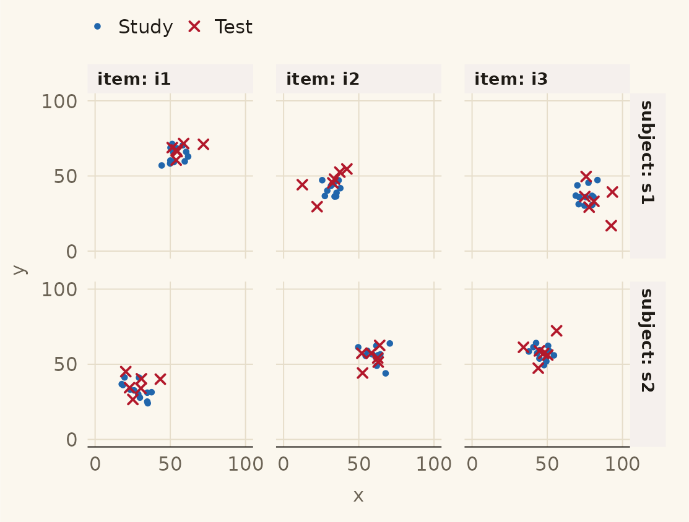
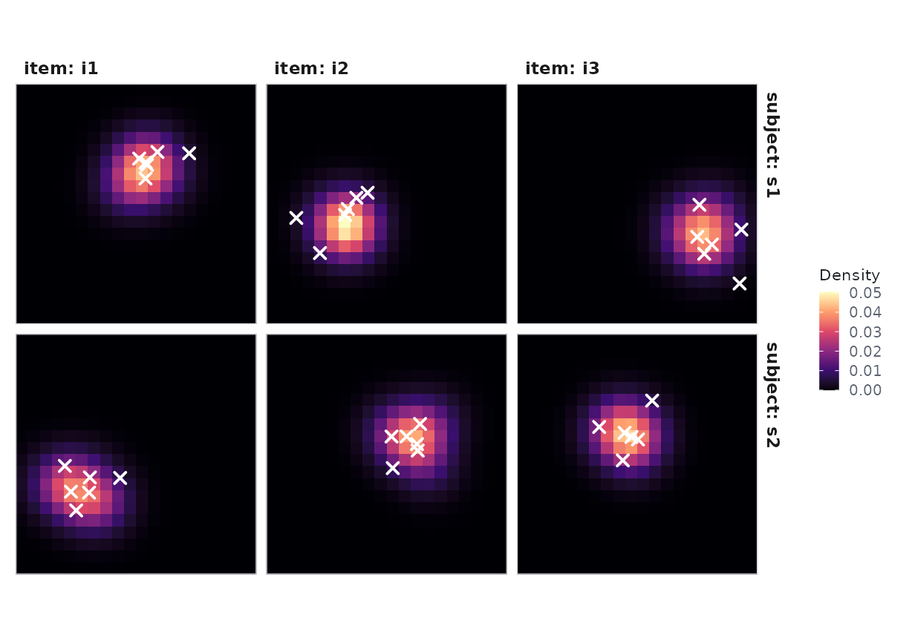
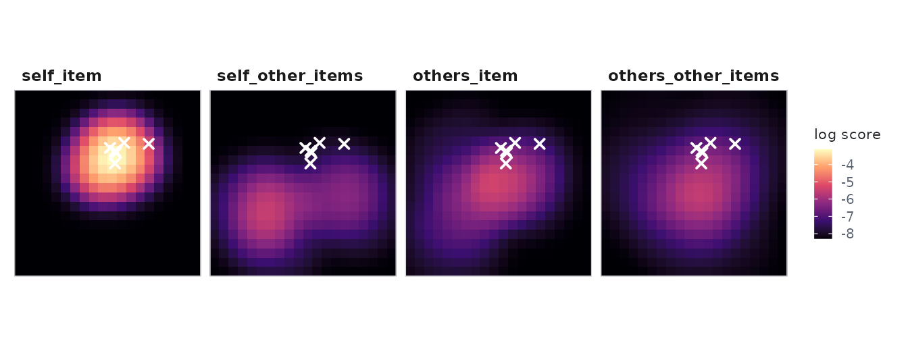
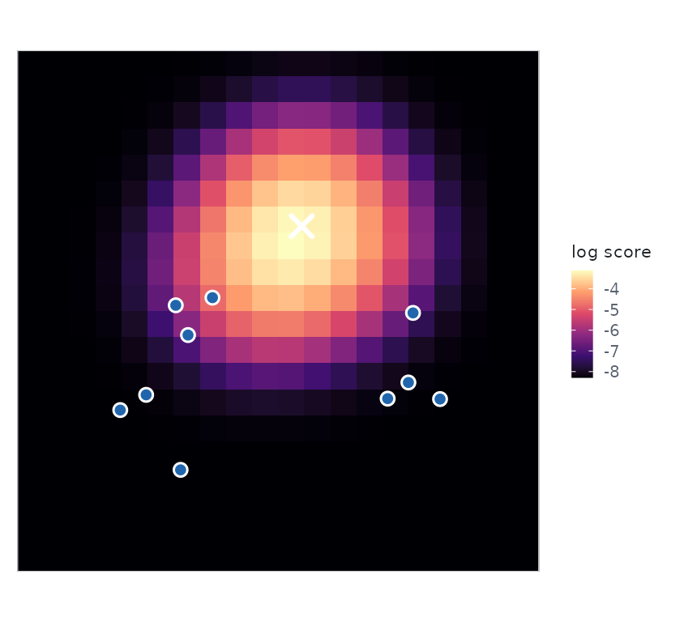
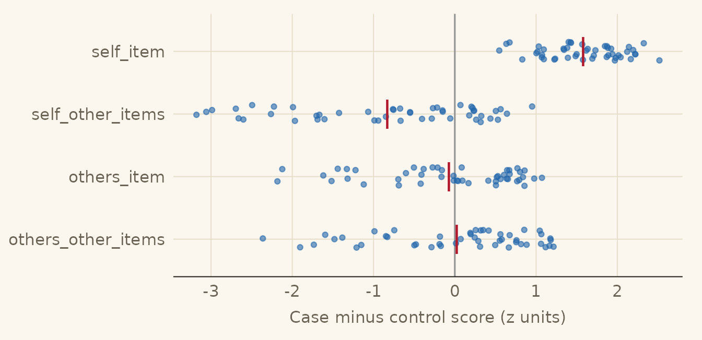
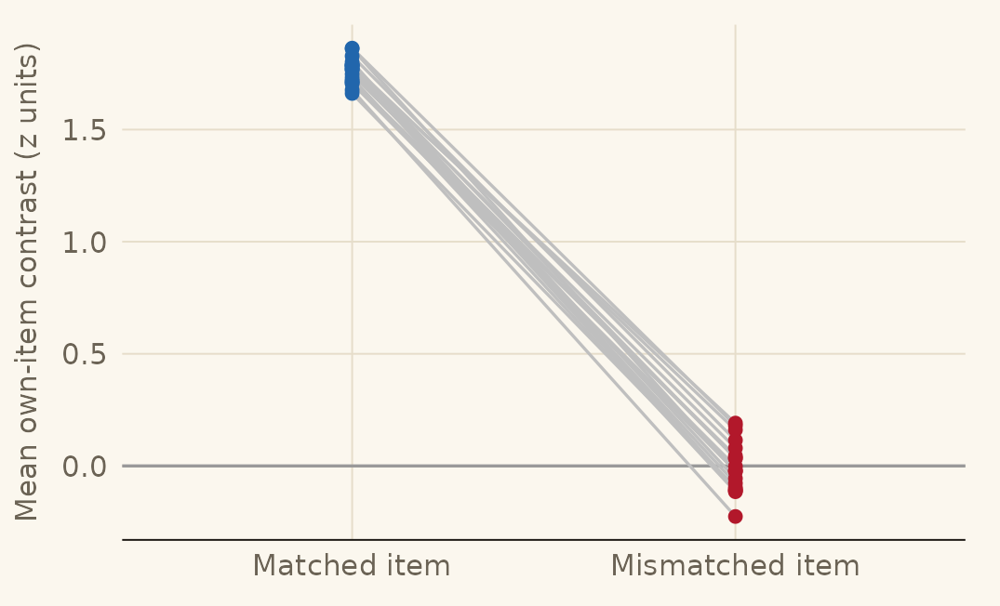

Fixation-level scoring with leave-out references
Source:vignettes/fixation-reference-scoring.Rmd
fixation-reference-scoring.RmdIn a memory reinstatement study, people first study a set of images and later see them again. A natural question is whether a test fixation lands where this person looked when studying this image, beyond where they look in general. This vignette answers that question at the level of single fixations:
- Build study density maps, one per person and item.
- Combine them into four leave-out reference maps for each person/item.
- Pair every test fixation (the case) with control locations.
- Score cases and controls against each reference and compare them.
- Repeat the comparison with a mismatched study map as a baseline.
Steps 3 and 5 involve random draws. The package returns them as explicit tables, so an analysis can be saved, replayed, or rescored under a different choice without new randomness.
The example data
We simulate eight people (s1–s8) studying
six items (i1–i6). Each person/item pair has
its own preferred location, drawn at random. Study fixations cluster
tightly around it, and the six test fixations for that pair return to it
more loosely. Nothing else links people or items, so only a person’s own
study map of an item should predict where they look at test.
Show the simulation code
set.seed(53)
study <- expand.grid(subject = paste0("s", 1:8), item = paste0("i", 1:6),
stringsAsFactors = FALSE)
centers <- cbind(runif(nrow(study), 20, 80), runif(nrow(study), 20, 80))
# One fixation_group of 12 study fixations per person/item pair.
study$fixgroup <- lapply(seq_len(nrow(study)), function(i) {
fixation_group(
x = rnorm(12, centers[i, 1], 5), y = rnorm(12, centers[i, 2], 5),
onset = seq(0, 1100, 100), duration = rep(100, 12)
)
})
# Six test fixations per pair, one trial per item.
test <- do.call(rbind, lapply(seq_len(nrow(study)), function(i) {
data.frame(subject = study$subject[i], item = study$item[i],
trial = study$item[i], epoch = "test",
x = rnorm(6, centers[i, 1], 7),
y = rnorm(6, centers[i, 2], 7), onset = seq(0, 500, 100))
}))The study data hold one fixation_group per person/item
pair. The test data are an ordinary table with one row per fixation:
head(test, 3)
#> subject item trial epoch x y onset
#> 1 s1 i1 i1 test 54.51360 66.24832 0
#> 2 s1 i1 i1 test 51.27608 68.86121 100
#> 3 s1 i1 i1 test 54.00783 67.26911 200
Study fixations (dots) and test fixations (crosses) for two people and three items. Each person returns to their own study location; the two people prefer different locations for the same item.
Study density maps
density_by() smooths each person’s study fixations for
each item into a density map on a shared 20 × 20 grid. With bounds of
2.5 and 97.5, the grid points are the centres of 5-unit cells tiling the
0–100 range. Here only fixation time between 50 and 950 ms counts, and a
fixation that straddles a window edge contributes just its overlapping
duration.
maps <- density_by(
study, groups = c("subject", "item"), sigma = 8,
xbounds = c(2.5, 97.5), ybounds = c(2.5, 97.5), outdim = c(20, 20),
window = c(50, 950), window_weight = "overlap", duration_weighted = TRUE
)
Study density maps for the same panels, with the test fixations overlaid. Test fixations fall on the bright region of the matching map.
A fixation is scored by looking up the grid point nearest to it. There is no interpolation between grid points; locations beyond the grid take the edge value.
Leave-out reference maps
A person’s own study map is the obvious predictor of their test
fixations. On its own, though, it cannot separate memory for this
specific image from two other sources. One is a habit of looking at the
same places in every image. The other is image content that draws
everyone’s gaze. reference_maps() therefore builds four
maps for each person/item pair. Each one leaves out a different part of
the data:
| Reference | Built from | High where… |
|---|---|---|
self_item |
this person’s study map of this item | this person looked at this image |
self_other_items |
this person’s maps of the other items | this person tends to look in any image |
others_item |
other people’s maps of this item | this image draws everyone’s gaze |
others_other_items |
other people’s maps of other items | people look in general (e.g. a centre bias) |
refs <- reference_maps(maps, floor = 1 / (10 * 20 * 20))
refs
#> Reference set: 48 target keys; 20 x 20 grid
#> Aggregation: log | output: log
#> reference supported_targets
#> self_item 48
#> self_other_items 48
#> others_item 48
#> others_other_items 48
The four references for person s1 and item i1, with s1’s test fixations on i1 overlaid. Only the own-item reference concentrates where those fixations land.
The other three references are broad or multi-lobed here. Each averages several study maps whose preferred locations are unrelated, because this simulation gives people and items nothing in common. Their mass sits centrally only because every simulated location lies between 20 and 80. In real data these references carry viewing habits, image content and centre bias. Comparing a fixation’s scores across all four is informative, but the scores are correlated. Separating their contributions requires a statistical model chosen by the researcher; the package does not decompose them automatically.
How the maps are combined. By default each study map
is scaled to sum to 1, transformed to log(density + floor),
and only then averaged across contributors. The floor is a
required small offset that keeps empty cells finite. For unit-sum maps,
1 / (10 * ncells) is a reasonable starting point, but it
changes the scores, so the package never chooses it silently. For
others_other_items, each other person’s items are averaged
first and those person means are then averaged with equal weight. A
person with more items therefore does not count more. Every other person
with at least one map of another item contributes, whether or not they
also studied the target item. Use space = "density" to
average densities instead of log values, and add
transform = "log" to take the log after averaging.
Missing data. A NULL map counts as
missing, not as an empty map. refs$counts records how many
maps (self references) or people (other references) contributed to each
reference. Any reference with fewer than min_n contributors
yields NA scores, and its row is kept.
reference_map() returns any single map for inspection, as
in the figure above.
Controls: where else could the person have looked?
A high score for a test fixation means little unless locations the
person did not fixate score lower.
sample_controls() pairs each test fixation (the
case) with control locations. By default the controls are the
same person’s fixations from other trials, so they share that person’s
general viewing habits.
strata <- sample_controls(test, n = 10, draws = 20, stratify_by = "epoch", seed = 7)
print(head(strata[c("subject", "item", "case_id", "control_id", "draw",
"is_case", "x", "y")], 4), row.names = FALSE)
#> subject item case_id control_id draw is_case x y
#> s1 i1 1 1 1 TRUE 54.51360 66.24832
#> s1 i1 1 100 1 FALSE 74.94712 36.29390
#> s1 i1 1 193 1 FALSE 24.69938 33.92677
#> s1 i1 1 244 1 FALSE 31.29766 19.54338Each case forms a stratum with its 10 controls. This is
repeated for 20 independent control draws. x and
y are each row’s own location, and control_id
is the row of test it was taken from (its donor; a
case row points to itself). The remaining columns describe the case.
Controls come from the same subject and epoch. They exclude the case’s
own trial and every trial showing the same item, so repeated
presentations of an item cannot donate controls that sit on its own
hotspots.

One test fixation (cross) and its ten controls from the first draw (circles), over the case’s own-item reference. The controls are s1’s fixations on other items.
Other designs call for other comparison locations.
method = "uniform" draws controls uniformly within explicit
bounds. method = "map" draws grid locations from a supplied
density, always with replacement. These choices answer different
questions. There is deliberately no option to jitter controls away from
cases: moving only the controls can create an apparent preference where
none exists.
Scores and case–control contrasts
score_strata() looks up every case and control location
in all four references. case_control_contrast() then
subtracts the mean control score from the case score in each stratum and
averages these differences within each trial. It returns one row per
trial and control draw. A single draw of 10 controls leaves the score
partly dependent on which controls happened to be sampled, so we average
each trial’s contrasts over the 20 draws:
scored <- score_strata(strata, refs)
contrasts <- case_control_contrast(scored, by = "trial")
trial_scores <- aggregate(contrasts[refs$refs], contrasts[c("subject", "trial")], mean)
head(trial_scores, 3)
#> subject trial self_item self_other_items others_item others_other_items
#> 1 s1 i1 2.194957 -2.493565 0.4124771 0.67478263
#> 2 s2 i1 1.940707 -1.701798 -0.6013381 0.01451235
#> 3 s3 i1 2.165340 -1.966741 -1.3192115 -1.20895867A positive contrast means the person’s test fixations score higher than their controls under that reference. Before the comparison, scores are standardized within each subject and control draw (see Reusing the scaling), so contrasts are in z units. The package keeps draws separate so that this averaging is a visible step. Averaging over 10–20 draws is a sensible default; a single draw adds control-sampling noise to every trial score.

Trial contrasts for each reference, averaged over control draws (one point per person and item), with their means. Only the own-item reference separates test fixations from controls in the expected direction.
The own-item contrast is large and positive, as planted. The two
“other people” contrasts are near zero. self_other_items is
negative even though this simulation contains no viewing habit.
The controls are this person’s test fixations on the other items, and
they land on the hotspots of that person’s study maps of those items,
which are exactly the maps averaged into self_other_items.
The controls therefore score higher than the case. With same-person
observed controls, this reference cannot reveal a viewing habit, because
the controls share it by construction. method = "uniform"
controls are needed if that is the question.
A mismatched-item baseline
Even in the absence of item-specific memory, a person’s own study map
of a different item can predict some test fixations, through
habits or shared image structure. A useful baseline therefore rescores
each test trial against a mismatched study map from the same person.
mismatch_assignments() draws the replacement items, and
mismatch_draws() rescores with them:
assignments <- mismatch_assignments(strata, refs, n = 20, seed = 31)
print(head(assignments, 3), row.names = FALSE)
#> subject trial item null_draw replacement_item
#> s1 i1 i1 1 i6
#> s2 i1 i1 1 i2
#> s3 i1 i1 1 i4
null <- mismatch_draws(strata, refs, assignments = assignments,
replace_ref = "self_item", by = "trial")Each of the 20 null draws assigns every trial one replacement item,
used for all of that trial’s fixations and control draws. With
replace_ref = "self_item", only the own-item reference is
swapped; replace_ref = "all" swaps the whole set of four
references.
Mismatching changes which controls are fair. A control taken from the
replacement item’s trial would sit on the replacement map’s hotspots and
push the mismatched contrast below zero. mismatch_draws()
therefore drops, in each draw, the controls taken from either the case’s
item or the replacement item. null$contrasts holds the
mismatched contrasts. null$paired_observed rescores the
matched map using exactly the same retained controls and
scaling, so the two can be compared directly:

Mean own-item contrast in each of the 20 null draws, for the matched study map and for a mismatched one, scored against the same retained controls. Lines join the two results from the same draw.
The mismatched contrasts sit near zero, while the matched contrasts
on the same controls remain well above it. That gap is the planted
item-specific preference. The matched values (mean 1.76) are higher than
the own-item mean in the previous section (1.58). Each draw scores fewer
controls and rescales with the fit to its mismatched scores, so the two
numbers are not directly comparable. null$observed keeps
the original contrasts on all controls. If the strata were drawn with
item = NULL and items repeat, those original contrasts can
still be attenuated by own-item controls.
mismatch_draws() returns these draws and their
assignments, not p-values. Whether swapping items gives a valid null
depends on the design: repeated items and condition differences can
violate exchangeability. An own-item contrast can also contain
image-content effects, so compare it with the other references before
reading it as person-specific reinstatement.
Reusing the scaling
score_strata() standardizes each reference within
subject and control draw, using all case and control scores. This is not
the same as z-scoring the cells of a map. The fitting step is also
available separately, so the same scaling can be saved and applied
again:
raw <- score_strata(strata, refs, standardize = "none")
scaling <- fit_score_scaling(raw, by = c("subject", "draw"))
replayed <- apply_score_scaling(raw, scaling)
identical(replayed, scored)
#> [1] TRUEEach control draw has its own fit, so adding draws later does not change the scaling of earlier ones. A reference whose scores are constant within a group maps to zero, missing scores stay missing (and make the contrast missing), and applying a fit to a group it has not seen is an error.
Details and options
Saving and replaying. Seeded functions restore the
caller’s random-number state, and scoring uses no randomness. Saving
strata, assignments and refs (for
example with saveRDS()) is enough to reproduce every number
above. The donor metadata (the control_sources attribute)
survives saveRDS() and subsetting with [, so a
saved subset of cases can still be traced to its controls.
subset() and export to CSV drop it.
Item exclusion. sample_controls()
detects an item column automatically. Pass
item = "stimulus" for another column name, or
item = NULL to exclude only the case’s own trial. With the
default replace = "auto", controls are drawn with
replacement only when too few are available, and an empty pool is an
error.
Mismatch controls. mismatch_draws()
drops controls without redrawing them, so a stratum can run out, which
is an error. The exclusion also applies to strata drawn with
item = NULL, so own-item controls are always dropped and
such strata can run out too. A subject who saw only two test items
cannot support a comparison between those two items with observed
controls, however many trials or controls there are. With
control_policy = "fixed", every supplied control is kept,
including those from the replacement item. Combined with
sample_controls(..., item = NULL), this gives an
item-discrimination baseline. Under a real effect that baseline is
negative, so it should not be read as the level expected without
reinstatement.
Scaling in the null. By default each null draw
refits the scaling on its retained mismatched scores and applies it to
both members of the pair. restandardize = FALSE applies the
original fit to both instead, and standardize = "none"
keeps raw reference units.
Related functions. sample_density()
samples a single density map, and also accepts a named list or table of
maps. template_sample() and
sample_density_time() share the same map preparation and
lookup. Use the strata and assignment tables above when the identities
of controls and replacement draws need to be kept.